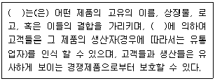
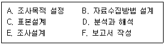
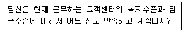
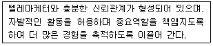
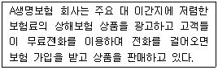
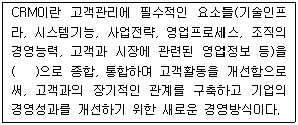

텔레마케팅관리사 (2009-07-26 기출문제)
1과목: 판매관리
1. 일반적인 마케팅과 다이렉트마케팅의 비교설명으로 가장 적합하지 않은 것은?
- 일반적인 마케팅의 고객범위는 불특정 다수인데 반해 다이렉트 마케팅은 특정고객을 대상으로 한다.
- 일반적인 마케팅은 대중매체를 중심으로 하는데 반해 다이렉트 마케팅은 개별 접촉으로 이루어진다.
- 일반적인 마케팅은 일방적인 마케팅활동을 하는데 반해, 다이렉트 마케팅은 1대 1 상호작용 마케팅활동을 한다.
- 일반적인 마케팅은 마케팅 활동 노출 정도가 낮은데 반해 다이렉트 마케팅은 마케팅활동 노출 정도가 높다.
(정답률: 87%)

2. 다음( )안에 공통으로 들어갈 알맞은 것은?

- 브랜드
- 패키지
- 품질
- 에프터서비스
(정답률: 75%)
3. 광고의 직접적인 반응 척도로 적합하지 않은 것은?
- 도달률(reach)
- 도달빈도(frequency)
- 강도(impact)
- 선호도(preference)
(정답률: 알수없음)
4. 소비자의 구매 과정에서 욕구 발생에 영향을 주는 내적변수가 아닌 것은?
- 소비자의 동기
- 소비자의 특성
- 소비자의 과거 경험
- 과거의 마케팅 자극
(정답률: 72%)
5. 매우 비탄력적인 수요곡선을 지니는 신상품을 도입할 때 가장 적합한 가격책정전략은?
- 고가가격전략
- 침투가격전략
- 초기할인전략
- 경쟁가격전략
(정답률: 48%)
6. 다음 중 표적시장에 관한 설명으로 옳은 것은?
- 시장의 이질성이 클수록 비차별적인 마케팅이 적합하다.
- 경쟁자의 수가 적어 경쟁 정도가 약할수록 차별적인 마케팅이 적합하다.
- 기업의 기존 마케팅 및 조직문화와의 이질성이 큰 시장을 표적시장으로 선택하는 것이 좋다.
- 설탕, 벽돌, 철강 등의 제품은 비차별적인 마케팅이 적합하다.
(정답률: 62%)
7. 서비스에 대한 설명으로 가장 거리가 먼 것은?
- 서비스는 유형제품과 비교하여 비유형적이고, 표준화가 어려우며, 즉시 소멸되며, 생산과 소비가 동시에 이루어지는 차별적 특성을 갖는다.
- 고객의 서비스만족도에 영향을 미치는 요인에는 고객구전, 개인적인 욕구, 과거경험, 기업의 외부 커뮤니케이션이 있다.
- 소비자들은 유형성, 신뢰성, 반응성, 설득성, 공감성의 5가지 요인을 가지고 서비스를 분류한다.
- 서비스 품질을 측정하는 방법 중 가장 널리 쓰여지는 방법은 SERVQUAL이다.
(정답률: 34%)
8. BCG(Boston Consulting Group)의 시장 성장-점유율 매트릭스에서 시장 성장률이 높으나 점유율이 낮은 사업부를 무엇이라 하는가?
- 별(star)
- 현금젖소(cash cow)
- 의문표(question mark)
- 개(dog)
(정답률: 58%)
9. 인쇄매체를 통한 마케팅과는 달리 텔레마케팅이 가지고 있는 가장 큰 특성은?
- 예약 가능성
- 양방향성
- 대중성
- 타겟 도달성
(정답률: 59%)
10. 판매 후 서비스(after service)는 어느 제품수준에 속하는가?
- 확장 제품
- 서비스 제품
- 유형 제품
- 핵심 제품
(정답률: 37%)
11. 다음 중 제품수명주기의 단계별 특징과 마케팅 전략에 관한 설명과 가장 거리가 먼 것은?
- 도입기 - 판매가 완만하게 상승하나 수요가 적고 제품의 원가도 높다.
- 성장기 - 경쟁제품이 나타나고 모방제품, 개량제품이 나타난다.
- 성숙기 - 이미지광고를 통한 제품의 차별화를 시도한다.
- 쇠퇴기 - 제품을 다시 한번 활성화시키는 재활성화(revitalization)를 시도할 필요가 있다.
(정답률: 36%)
12. 다음 중 차별적 포지셔닝을 하기 위한 제품의 조건으로 가장 적합한 것은?
- 경쟁자와 직접적으로 경쟁하지만 제품의 독특한 속성을 강조하는 제품
- 동일 시장에서 유사한 제품속성을 토대로 경쟁자와 경쟁하는 제품
- 경쟁자와 유사한 제품속성으로 상이한 시장에서 경쟁하는 제품
- 비교적 경쟁이 덜하고 보다 작은 규모의 틈새시장을 공략하는 제품
(정답률: 알수없음)
13. 다음 중 아웃바운드 텔레마케팅을 활용하는 마케팅이라고 볼 수 없는 것은?
- TV광고 마케팅
- 일대일 마케팅
- 데이터베이스 마케팅
- 다이렉트 마케팅
(정답률: 65%)
14. 마케팅 믹스에서 4P에 속하는 것이 아닌 것은?
- 유통
- 고객
- 가격
- 제품
(정답률: 67%)
15. RFM점수분석법의 평가요소에 해당하지 않는 것은?
- 최근구입여부
- 구입횟수
- 제품구입액의 정도
- 구입제품의 인지도
(정답률: 55%)
16. 다음 소비재 중 가장 강한 상표애호도를 가지는 것은?
- 편의품
- 선매품
- 전문품
- 원재료
(정답률: 알수없음)
17. 다음 중 텔레마케터에 대한 특수한 판매기술의 설명으로 틀린 것은?
- 시간제약(time constraints)이 방문판매보다 심하다.
- 판매관련 문헌(sales literature)의 동시사용이 불가능하다.
- 폭넓은 고객접촉이 가능하다.
- 고객의 목소리를 통해 고객의 심리를 파악해야 한다.
(정답률: 50%)
18. 가격할인 형태 중 신 모델을 구입할 경우 구 모델을 반환하면 그만큼 가격을 할인해 주는 방법은?
- 현금할인
- 수량할인
- 계절할인
- 공제
(정답률: 80%)
19. 네티즌 간의 구전효과를 이용한 판촉기법으로 인터넷 이용자들 사이에 확산 효과를 노린 마케팅 기법은?
- 제휴마케팅(affiliate marketing)
- 바이러스 마케팅(virus marketing)
- 데이터베이스 마케팅(database marketing)
- 퍼미션 마케팅(permission marketing)
(정답률: 67%)
20. 무점포 소매기법의 형태에 해당하지 않는 것은?
- 텔레마케팅
- 방문판매
- 홈쇼핑
- 편의점
(정답률: 77%)
21. 아웃바운드 판매전략의 일련과정이 바르게 나열된 것은?
- 잠재고객 특성 정의 → 잠재고객 파악 → 스크리닝→ 판매 → 사후관리
- 잠재고객 특성 정의 → 스크리닝 → 잠재고객 파악→ 판매 → 사후관리
- 잠재고객 파악 → 잠재고객 특성 정의 → 스크리닝→ 판매 → 사후관리
- 잠재고객 파악 → 스크리닝 → 잠재고객 특성정의→ 판매 → 사후관리
(정답률: 60%)
22. 아웃바운드 판매 전략의 특성으로 틀린 것은?
- 아웃바운드에서는 고객리스트가 반응률에 영향을 미친다.
- 아웃바운드에서는 고객에게 전화를 건다는 측면에서 소극적, 방어적 마케팅이다.
- 아웃바운드는 마케팅전략이나 통화기법 등의 노하우, 텔레마케터의 자질 등에 큰 영향을 받는다.
- 아웃바운드에서 데이터베이스 마케팅기법을 활용하면 더욱 효과가 증대된다.
(정답률: 82%)
23. 다음 중 촉진 수단에 관한 설명으로 틀린 것은?
- 광고는 비 인적 커뮤니케이션 방법이기 때문에 판매사원들을 사용하는 방법만큼 설득적이지 못하다.
- 인적판매는 소비자의 욕구를 보다 직접적으로 알 수 있으며 또한 그에 대한 즉각적인 반응이 가능하다.
- 판매촉진(sales promotion)은 인지도 제고, 기업이나 제품 이미지 제고 등 장기적인 목표를 달성하기 위한 투자가 대부분이다.
- PR은 촉진수단으로서 뉴스, 행사 등을 활용하기 때문에 일반적으로 소비자들은 PR이 광고보다 더 믿을 만하다고 여기는 것으로 알려져 있다.
(정답률: 25%)
24. 고객에 대한 구매제안 유형 중 고객의 구매이력 등의 관리를 통해 기존에 구매한 고객에게 다른 상품을 구입하도록 하는 제안은?
- cross selling
- up selling
- negative option
- positive option
(정답률: 62%)
25. 소비자 구매의사 결정에 관한 단계별 설명으로 틀린 것은?
- 정보탐색-소비자들이 이용하는 정보탐색 활동에는 인적, 상적, 공공, 경험 등이 있다.
- 문제인식-소비자 구매의사 결정 과정의 첫 단계이다.
- 대체 안 평가-가장 선호하는 상표를 구매한다.
- 구매 후 행동-제품 사용성과에 만족한 소비자는 재구매의 가능성이 높다.
(정답률: 72%)
2과목: 시장조사
26. 다음 중 사전조사 후 질문의 삭제나 수정이 필요한 경우는?
- “당신이 일 년 동안 마시는 소주의 양은 몇 cc입니까?” 라는 질문에 응답자들은 술을 마시면서 cc로 계산한 경험이 없기 때문에 당혹스러워 했다.
- “지금까지는 선생님의 자녀에 대한 질문을 했는데, 이제부터는 사모님에 대한 생각을 묻겠습니다.”라는 식의 부분 전환의 설명을 하여 흐름을 유연하게 했다.
- “낙태를 금지하는 것이 좋다고 생각하십니까?”라고 낙태금지법의 찬성여부에 대해 풀어서 분명하게 질문하였다.
- “당신은 어느 곳에서 태어났습니까?” 라고 고향이라는 개념을 정확하게 정하여 질문하였다.
(정답률: 50%)
27. 설문지작성을 위한 응답의 형태 중 응답의 항목들은 상호배타적이고 모든 응답을 포관할 수 있는 조건을 만족시키는 응답형태는?
- 자유응답형
- 다지선다형
- 양자택일형
- 문장완성형
(정답률: 36%)
28. 고저된 일정수의 표본가구 또는 개인을 선정하여 반복적으로 조사에 활용하는 방법은?
- 소비자패널조사
- 신디케이트조사
- 옴니버스 조사
- 가정유치조사
(정답률: 알수없음)
29. 표본프레임(sampling frame)에 대한 설명으로 틀린 것은?
- 표본을 추출하기 위한 모집단의 목록을 말한다.
- 표본추출단위가 집단인 경우에는 모집단의 목록인 표본프레임도 개인별 목록이 아니라 집단별 목록만 있으면 된다.
- 비확률 표본추출방법을 이용할 경우 정확한 표본 프레임이 반드시 있어야 한다.
- 정확한 확률표본 추출을 하기 위해서는 모집단과 정확하게 일치하는 표본프레임이 확보되어야 한다.
(정답률: 47%)
30. 통계조사에 포함되는 전수조사와 표본조사에 관한 설명으로 틀린 것은?
- 전수조사는 정밀도를 요할 때 사용되며, 모든 부분을 전부 조사하는 것을 말한다.
- 표본조사는 부분조사라고도 한다.
- 표본조사는 전수조사에 비해 인력과 시간 및 비용이 적게 든다.
- 다면적으로 조사결과를 이용하려 할 때에는 표본조사를 한다.
(정답률: 55%)
31. 시장조사를 위한 면접조사의 장점이 아닌 것은?
- 조사자가 필요에 따라 질문을 수정할 수 있다.
- 모호한 응답에는 재질문을 통해 명료화 할 수 있다.
- 질문을 반복하거나 변경함으로써 응답자의 반응을 적절히 이해할 수 있다.
- 짧은 시간 내에 여러 사람들에게 접근할 수 있는 편리함 이 있다.
(정답률: 56%)
32. 집단뿐 아니라 개인 또는 추상적인 가치에 관해서 적용할 수 있으며, 집단 상호간의 거리를 측정하는데 유용한 것은?
- 보가더스 척도
- 거트만척도
- 소시오메트리
- 서스톤척도
(정답률: 40%)
33. 구매 관련 자료 수집을 위한 횡단조사의 조사항목으로 가장 적합하지 않은 것은?
- 고객 개인 정보
- 선호상표
- 구매의사
- 상표 및 광고 인지도
(정답률: 알수없음)
34. 질문지의 문항 형식 중 응답자가 자유롭게 응답을 하도록 하는 질문의 형태는?
- 양자택일형
- 자유응답형
- 가치개입형
- 다지선다형
(정답률: 47%)
35. 질문지 배열에 관한 설명으로 틀린 것은?
- 시작하는 질문은 응답자의 흥미를 유발하는 것으로 쉽게 대답할 수 있는 것으로 한다.
- 개인의 사생활 등 민감한 질문은 가급적 뒤에 배열한다.
- 특수한 것을 먼저 묻고 일반적인 것을 그 다음에 질문한다.
- 비슷한 형태로 질문을 계속하면 응답에 정형이 생길 수 있기 때문에 이를 피하도록 한다.
(정답률: 46%)
36. 마케팅 조사의 한 종류로써 인과조사는 원인과 결과를 규명하기 위한 조사이다. 인과관계를 정확하게 밝히기 위한 인과관계의 성립요건이 아닌 것은?
- 실험 변수의 변화
- 변화의 시간적 우선순위
- 병발발생의 조건
- 외생변수 영향의 통제
(정답률: 10%)
37. 다음 중 기업 내부 자료에 포함되지 않는 2차 자료는?
- 회계자료
- 조직 현황
- 경제 신문사 자료
- 영업자료
(정답률: 73%)
38. 다음 중 모집단에 관한 설명으로 틀린 것은?
- 모집단을 설정할 때는 전화 걸 대상, 응답자 역할의 구체화, 직업 등을 고려해야 한다.
- 모집단은 조사자가 추론하고자 하는 모든 자료들의 집합을 말한다.
- 모집단은 자료의 흩어진 정도를 나타내지 않는다.
- 전화조사 시 조사원이 어떤 사람들에게 전화할 것인가를 추출하는 기초자료이다.
(정답률: 50%)
39. 자료편집과정에서 주의를 기울여야 할 항목과 가장 거리가 먼 것은?
- 일관성
- 완결성
- 자유응답형의 처리
- 주관성
(정답률: 알수없음)
40. 비만아동 들의 식습관을 파악하기 위해 실시하는 관찰방법의 유형으로 가장 적합한 것은?
- 참여관찰
- 준참여관찰
- 비참여관찰
- 실험관찰
(정답률: 48%)
41. 다음 중 척도법의 선택으로 가장 적합한 것은?
- 성별을 분류하기 위해 비율척도를 선택했다.
- 상품의 선호도 순위를 알아보기 위해서 비율척도를 선택했다.
- 시장세분구역 분류를 하기 위해 등간척도를 선택했다.
- 지구온난화를 조사하기 위해 등간척도를 선택했다.
(정답률: 23%)
42. 4세 미만 여아들을 대상으로 선호하는 장난감 유형에 관한 조사를 시행하려 할 때 가장 적합한 조사 방법은?
- 면접조사
- 관찰조사
- 전화조사
- 설문조사
(정답률: 77%)
43. 시장조사에서 설문지 응답자의 권리를 보호하기 위한 준수사항으로 틀린 것은?
- 응답자에게는 조사면접에 꼭 참가해야 할 의무가 없다.
- 조사자는 응답자가 조사면접에 익숙하지 못하기 때문에 면접의도에 맞는 응답을 유도한다.
- 조사자는 응답자에게 질문을 객관화함으로써 응답자의 사생활을 침해하지 말아야 한다.
- 조사자는 응답자와 조사면접을 할 때 면접에 관한 세칙과 지시사항에 따라서 수행해야 한다.
(정답률: 24%)
44. 다음 중 비확률 표본추출방법에 해당하는 것은?
- 단순무작위표본추출법
- 편의표본추출법
- 층화표본추출법
- 군집표본추출법
(정답률: 알수없음)
45. 일반적인 마케팅조사의 단계적 절차를 바르게 나열한 것은?

- A → D → C → B → E → F
- A → D → C → E → B → F
- A → E → B → C → D → F
- A → B → E → C → D → F
(정답률: 알수없음)
46. 다음 중 탐색조사의 종류에 해당하지 않는 것은?
- 문헌조사
- 전문가의견조사
- 실험조사
- 사례조사
(정답률: 67%)
47. 다음 중 마케팅 믹스의 4P 중 제품(product)결정과 관련 된 시장 조사의 역할과 목적이 아닌 것은?
- 타겟소비자가 제품으로부터 기대하는 편익이 무엇인지 알 수 있다.
- 소비자의 가격에 대한 민감도를 파악할 수 있다.
- 기존 제품에 새로 추가할 속성이나 변경해야 할 속성을 파악할 수 있다.
- 브랜드명의 결정, 패키지, 로고 대안들에 대한 테스트를 할 수 있다.
(정답률: 59%)
48. 다음 설문문항이 가지고 있는 dhb에 관한 설명으로 가장 적합한 것은?

- 단어들의 뜻을 명확하게 설명해야 한다.
- 하나의 항목으로 두 가지 내용을 질문하여서는 안 된다.
- 응답자들에게 지나치게 자세한 응답을 요구해서는 안 된다.
- 대답을 유도하는 질문을 해서는 안 된다.
(정답률: 77%)
49. 다음 중 인터넷 조사의 단점과 가장 거리가 먼 것은?
- 인터넷 사용자로 표본이 편중되는 측면이 있다.
- 조사자에 대한 관리비용이 상승한다.
- 조사에 능동적으로 응대하는 사람만 조사가 가능하여 대표성이 상실 될 수 있다.
- 응답자를 정확하게 통제, 확인 할 수 없다.
(정답률: 65%)
50. 설문지를 작성할 때 반드시 포함시키지 않아도 되는 것은?
- 응답자에 대한 협조요청
- 식별자료
- 주소 및 전화번호
- 지시사항
(정답률: 70%)
3과목: 텔레마케팅관리
51. 콜센터의 조직구성원 중 텔레마케터에 대한 교육훈련 및 성과관리 업무를 주로 수행하는 자는?
- 센터장
- 슈퍼바이저
- 통합품질관리자
- OJT담당자
(정답률: 86%)
52. 콜센터 상담원을 대상으로 성과측정을 위한 인터뷰를 할 때 평가과정에 영향을 미치는 일반적 오류 중 한 가지 측면에서 뒤떨어질 경우 나머지 모두를 나쁘게 평가하는 것은?
- 각인효과(horn effect)
- 후광효과(halo effect)
- 대조효과(contrast effect)
- 상동효과(stereotype effect)
(정답률: 59%)
53. 콜센터의 역할 및 기능과 가장 거리가 먼 것은?
- 비용절감
- 수익증대
- 고객정보 분산
- 고객관리
(정답률: 60%)
54. 텔레마케터에 대한 OJT방법으로 적합하지 않는 것은?
- 기존상담원과 동반근무 실습
- 모니터링을 통한 슈퍼바이저와의 일대일 코칭
- 우수 상담원의 녹취록을 통한 훈련
- 타 업종의 외부전문가 공개실무강좌 참가
(정답률: 67%)
55. 인하우스 텔레마케팅(In-house Telemarketing)이 필요한 경우와 가장 거리가 먼 것은?
- 텔레마케팅운영에 필요한 인원, 장비, 환경이 갖추어져 있는 경우
- 고객정보가 외부에 유출되면 곤란한 경우
- 고객과의 지속적인 전문상담이 필요한 경우
- 텔레마케터의 업무량이 포화상태에 있는 경우
(정답률: 64%)
56. 인적자원의 가치를 체계적이고 합리적으로 측정하기 위한 측정지표에 대한 설명으로 틀린 것은?
- 인적자본 수익성지표-종업원 단위당 생산성
- 인적자본 경제적 부가가치지표- 종업원 단위당 실제 기업이익
- 인적자본 투자수익률지표-인적자원에 대한 투자 금액
- 인적자본 시장가치지표-종업원 단위당 지적자산 크기
(정답률: 59%)
57. 다음 중 경력관리에 대한 설명으로 틀린 것은?
- 장기계획이다.
- 적재적소, 후진양성에 필요하다.
- 능력주의와 연공주의를 절충한다.
- 조직의 목표와 개인의 목표를 일치시킨다.
(정답률: 알수없음)
58. 다음 중 OJT의 장점과 가장 거리가 먼 것은?
- 교육 대상자의 능력과 수준에 맞추어 지도가 가능하다.
- 교육 대상자는 교육 받은 내용을 바로 실행해 보고 수정할 수 있다.
- 개인 지도를 통해 교육 효과가 높다.
- 실제 일이 이루어지는 과정을 현장에서 보여주면 되므로 교육자는 사전 교육 계획을 세울 필요가 없다.
(정답률: 65%)
59. 다음 중 텔레마케팅 활동과 가장 거리가 먼 것은?
- 이동 통신사에서 전화로 새 상품에 대한 고객 반응을 조사한다.
- 카탈로그 쇼핑 업체에서 상품소개 카탈로그를 우편으로 보내서 우편 주문 받아 판매한다.
- 여행사에서 Fax를 이용하여 신 여행 상품을 소개한다.
- 백화점에서 생일 고객에게 축하 전화를 한다.
(정답률: 32%)
60. 다음은 콜센터 리더의 유형 중 무엇에 관한 설명인가?

- 지시형 리더
- 위양형 리더
- 지원형 리더
- 참가형 리더
(정답률: 43%)
61. 텔레마케팅에서 효과적인 코칭의 목적과 가장 거리가 먼 것은?
- 모니터링 결과에 대한 커뮤니케이션
- 텔레마케터의 업무수행능력 강화과정
- 특정부문에 대한 피드백을 제공하고 지도 교정해 가는 과정
- 특정행동에 대한 감시 감독
(정답률: 77%)
62. 다양한 전문적 기술을 가진 사람들의 집단에 의해 해결될 수 있는 프로젝트를 중심으로 조직화된 신속한 변화와 적응이 가능한 임시적 시스템인 조직구조는?
- 매트릭스 조직구조
- 혼합형 조직구조
- 위원회 조직구조
- 직능별 조직구조
(정답률: 67%)
63. 다음은 어떤 형태의 텔레마케팅인가?

- 인바운드(Inbound), 기업 대 소비자(B to C)
- 인바운드(Inbound), 기업 대 기업(B to B)
- 아웃바운드(Outbound), 기업 대 소비자(B to C)
- 아웃바운드(Outbound), 기업 대 기업 (B to B)
(정답률: 50%)
64. 콜센터의 효율적 운영방안과 가장 거리가 먼 것은?
- 고객 상담을 종합적으로 처리할 수 있는 전문 인력을 배치한다.
- 고객이 요구하는 사항은 무엇이든지 원스톱(one-stop)으로 처리하는 것을 지향한다.
- 고객의 특수한 요구 발생 시 스스로 판단하여 처리하도록 한다.
- 고객위주의 상담 스크립트를 개발하고 상담내용을 데이터베이스화 하여 경영활동에 반영한다.
(정답률: 80%)
65. 콜량 예측 시 필요한 데이터와 가장 거리가 먼 것은?
- 마무리 시간
- 평균처리시간
- 텔레마케터의 수
- 평균대화시간(통화시간-초)
(정답률: 44%)
66. 다음 중 아웃바운드 콜센터 성과지표에 해당하지 않는 것은?
- 시간당 판매량
- 평균 판매가치
- 시간당 접촉회수
- 상담원 착석율
(정답률: 알수없음)
67. 인바운드 텔레마케팅 도입 시 점검사항과 가장 거리가 먼 것은?
- 고객정보를 처리할 수 있는 컴퓨터 및 소프트웨어 등의 활용 수준
- 상품, 유통조직과 가격, 표적고객 등의 마케팅 요인
- 고객에게 제공할 정보, 스크립트 작성, 텔레마케터의 근무방법 등 텔레마케팅을 전개하는 방법
- 고객의 문의에 보다 객관적이고 합리적인 답변을 하기 위하는 질의응답 매뉴얼
(정답률: 알수없음)
68. 콜센터 시스템의 관리자환경과 관련하여 전문적으로 이용 가능한 기능과 가장 거리가 먼 것은?
- 모니터링 기능
- 레포팅 기능
- 라우팅 기능
- 스크린팝 기능
(정답률: 알수없음)
69. 텔레마케터 모니터링의 평가항목에 포함되지 않는 것은?
- 텔레마케터의 음성
- 텔레마케터의 표현 및 구술능력
- 텔레마케터의 전문성
- 텔레마케터의 주관적인 사고
(정답률: 54%)
70. 역할연기(role playing)의 목적과 가장 거리가 먼 것은?
- 커뮤니케이션의 능력을 향상시킨다.
- 업무지식을 습득한다.
- 텔레마케팅 스킬능력을 향상시킨다.
- 예기치 못한 상황대처능력을 향상시킨다.
(정답률: 73%)
71. 다음 중 콜센터에 대한 설명으로 틀린 것은?
- 콜센터는 기업과 고객 간에 정보통신수단을 통한 커뮤니케이션적인 접촉이 이루어지는 곳이다.
- 콜센터는 기업의 제품기획과 개발, 광고전략 수립, 행정업무 등이 이루어지는 곳이다.
- 콜센터는 크게 인바운드형 콜처리 업무와 아웃바운드 형 콜처리 업무가 이루어진다.
- 텔레마케팅과 커뮤니케이션이 결합되어 전문상담이 이루어지는 고객지향적 조직이라고 볼 수 있다.
(정답률: 69%)
72. 리더십의 정의에 있어서 전제적 가정이 잘못된 것은?
- 지도자(leader)는 추종자(follower)가 있어야 한다.
- 지도자(leader)는 추종자(follower)보다 많은 권력을 가진다.
- 리더십은 추종자의 행동에 영향을 미치기 위하여 상이한 권력 형태를 이용한다.
- 지휘는 조직의 관리 기능 중에 하나이며 조직구성원의 비행동적 측면을 다룬다.
(정답률: 59%)
73. 텔레마케팅의 성장 배경에 관한 설명 중 “신용카드의 보급으로 고객 정보의 취득과 수요 창출의 효과”를 고려한 측면은?
- 기술적 측면
- 사회적 측면
- 소비자 측면
- 생산자 측면
(정답률: 37%)
74. 텔레마케팅을 수행하는 과정에서 고객과 텔레마케터간의 공감대 형성을 위한 RAPPORT 형성기법에 관한 설명으로 가장 적합한 것은?
- 고객의 불만이나 문제해결을 위한 방법을 제안하여 현재요구를 확인시켜주는 질문기법이다.
- 판매종결에 필요한 정보를 파악 할 수 있으며 가장 강조해야 할 상품의 특성파악을 할 수 있도록 하는 것이다.
- 고객의 적극적인 의사결정을 도우려는 것이다.
- 고객과 상담원간의 친밀감 형성을 위해 고객의 커뮤니케이션 특성에 맞추어 진행하는 것이다.
(정답률: 50%)
75. 텔레마케터가 교육받아야 할 내용과 가장 거리가 먼 것은?
- 적극적이고 긍정적인 사고의 함양
- 표현 및 대화능력
- 제품 및 서비스 지식
- 통화품질의 분석 능력
(정답률: 54%)
4과목: 고객응대
76. 인바운드 텔레마케팅의 일반적인 상담순서를 바르게 나열한 것은?
- 고객상황 탐색 → 고객문의내용 파악 → 해결방안제시 → 요약 및 종결
- 고객 문의내용 파악 → 고객상황 탐색 → 해결방안제시 → 요약 및 종결
- 해결방안 제시 → 고객문의내용 파악 →고객상황 탐색 → 요약 및 종결
- 고객 문의내용 파악 → 해결방안 제시 → 고객상황 탐색 → 요약 및 종결
(정답률: 62%)
77. 다음 중 고객관계관리의 특징이 아닌 것은?
- 고객유지에 중점을 둔다.
- 고객점유율에 중점을 둔다.
- 고개관계에 중점을 둔다.
- 판매관리에 중점을 둔다.
(정답률: 40%)
78. 고객과 친근감을 형성하기 위한 분위기 조성방법과 가장 거리가 먼 것은?
- 고객의 감정을 잘 수용하여 공감을 표하고 우호적인 분위기를 조성한다.
- 본론부터 언급한 후 친근감을 준다.
- 처음 대할 때에는 긴장된 분위기부터 완화시킨다.
- 상호이익이 될 주제를 찾아 대화한다.
(정답률: 54%)
79. 개방형 질문에 관한 설명으로 가장 적합한 것은?
- Yes/No 답변을 유도할 수 있다.
- 상담원이 유도하는 방향으로 고객을 리드하는 것이 용이하다.
- 전체 상담시간 조절이 용이하다.
- 고객상황에 대한 명확한 이해가 용이하다.
(정답률: 72%)
80. 다음 ( )안에 들어갈 가장 알맞은 것은?

- 기업중심
- 고객중심
- 시장중심
- 영업중심
(정답률: 77%)
81. CRM전략에 관한 설명으로 틀린 것은?
- 거래고객 활성화 전략은 고객의 구매이력을 지속적으로 기록하여 고객의 구매량에 따라 인센티브를 제공하고 지속적인 재구매를 유도하는 전략이다.
- 거래고객 충성도 전략은 고객과의 관계강화를 통해 고객의 충성도를 강화하는 전략으로 거래고객이 경쟁업체로 이탈하지 않도록 하는 전략이다.
- 거래고객 유지전략은 고객이 가격이 비싸고 지각된 위험성이 높은 제품을 구매한 후에 자신의 결정에 대한 불안감을 느끼는데 이를 제거시켜주는 전략이다.
- 거래고객 크로스세일 전략은 잠재고객 리스트를 수집하여 다양한 마케팅을 통해 가망고객으로 발굴하여 적절한 오퍼를 제공하는 전략이다.
(정답률: 25%)
82. 메타그룹의 산업보고서에서 처음 제안된 CRM시스템 아키텍처의 3가지 구성요소가 아닌 것은?
- 분석 CRM
- 운영 CRM
- 협업 CRM
- 통합 CRM
(정답률: 54%)
83. 커뮤니케이션의 장애요인 중 발신자에 의한 장애요인이 아닌 것은?
- 커뮤니케이션 스킬 부족
- 준거의 틀
- 타인에 대한 민감성 부족
- 선택적인 청취
(정답률: 53%)
84. 고객에게 전달할 내용을 선정할 때 유의할 사항으로 틀린 것은?
- 상황에 알맞은 내용을 선정한다.
- 텔레마케터가 충분히 알고 있는 내용을 선정한다.
- 텔레마케터의 수준에 맞는 내용을 선정한다.
- 상대방에 대한 정보를 바탕으로 하여 내용을 선정한다.
(정답률: 알수없음)
85. 구매전 상담에서 제품정보를 제공하는 목적과 가장 거리가 먼 것은?
- 경쟁제품과 비교할 수 있도록 하는 것이다.
- 소비자가 지불하는 제품 값과 품질의 합리성을 설명하는 것이다.
- 소비자가 충동 구매할 수 있게 만드는 것이다.
- 기업의 좋은 이미지를 형성하려는 목적이다.
(정답률: 69%)
86. CRM을 위한 기업의 마케팅 커뮤니케이션 방식으로 적합하지 않는 것은?
- 매스미디어상의 브로드캐스팅광고
- 광고와 실 판매의 기능을 포괄하는 커뮤니케이션
- 통합적 마케팅 커뮤니케이션
- 프로모션의 효율성과 효과성을 제고할 수 있는 커뮤니케이션
(정답률: 알수없음)
87. 효과적인 의사소통을 방해하는 장애요인 중 여과(filtering)에 관한 설명으로 옳은 것은?
- 메시지를 수신하는 시점에서 수신자의 기분이나 느낌이 메시지의 해석에 영향을 준다.
- 발신자가 의도적으로 정보를 조작하여 수신자에게 호의적으로 보이게 하려는 것이다.
- 수신하는 여러 정보를 어떤 체계적인 방법으로 범주화하거나 집단화하여 해석한다.
- 수신자는 자신의 욕구, 동기유발, 경험, 배경 등 개인적 특성에 따라 정보를 보고 듣게 된다.
(정답률: 알수없음)
88. 화가 난 고객과의 상담 시 적합한 응대 요령이 아닌 것은?
- 고객의 문제가 이미 상담원이 잘 알고 있는 문제라 하더라도, 고개기 충분히 말할 수 있도록 고객을 방해하지 않는다.
- 고객이 말하는 사실보다 고객의 감정을 헤아리며 공감적 표현을 전달한다.
- 일상적인 불만으로 해결이 가능하더라도 바로 처리하기 보다는 그 고객만을 위한 특별한 배려임을 강조하며 시간을 끈다.
- 문제와 고객의 불만 정도에 따른 적절한 사과를 잊지 않는다.
(정답률: 67%)
89. 다음 중 운영CRM시스템에 포함되지 않는 것은?
- 마케팅자동화시스템
- 영업자동화시스템
- 고객서비스자동화시스템
- 고객상호작용센터
(정답률: 25%)
90. CRM에서 현실적인 관계형성을 위해 고객이 기업에게 기대하는 관계 구축의 요소가 아닌 것은?
- 상호 간의 신뢰
- 공정한 차별 대우
- 단기적 관계
- 열린 대화 창구
(정답률: 62%)
91. CRM시스템의 효과에 영향을 미치는 변수들 중에서 데이터베이스에 기반을 둔 고객지향성 변수는 어느 요인에 속하는가?
- 마케팅 요인
- 기술적 요인
- 프로젝트 요인
- 전략적 요인
(정답률: 47%)
92. 다음 중 고객가치 측정기법이 아닌 것은?
- 고객생애가치
- 고객점유율
- RFM
- 품목점유율
(정답률: 알수없음)
93. 전화상담 시 응대방법으로 가장 적합하지 않은 것은?
- 가능한 한 전문용어를 사용하여 전문가처럼 보이게 한다.
- 맑고 밝은 음성을 유지한다.
- 상대를 배려하는 마음가짐과 올바른 경어를 사용한다.
- 상황에 따라 적절하고 감각적인 대응을 한다.
(정답률: 64%)
94. 고객이 불평, 불만을 호소하는 일반적인 단계를 바르게 나열한 것은?
- 비공식적인 단계→공식적인 단계→법적인 호소
- 법적인 호소→비공식적인 단계→법적인 호소
- 비공식적인 단계→법적인 호소→공식적인 단계
- 법적인 호소→공식적인 단계→비공식적인 단계
(정답률: 54%)
95. CRM마케팅 캠페인을 위한 실행단계에서 이루어지는 활동이 아닌 것은?
- 목표고객선정
- 오퍼 개발과 고객접촉경로 설정
- 마케팅 캠페인 반응 관측
- 오퍼 효과 테스와 측정
(정답률: 25%)
96. 다음 중 외적 이미지를 형성하는 요인이 아닌 것은?
- 밝은 표정
- 단정한 옷차림과 메이크업
- 가치관, 신념
- 바른 자세와 태도
(정답률: 39%)
97. CRM의 성과를 거시적 관점과 미시적 관점으로 구분할 때 미시적 성과에 해당하는 것은?
- 고객만족
- 고객의 가치
- 재무적 성과
- 내부업무의 효율성
(정답률: 31%)
98. 기업은 고객의 이탈을 방지하기 위해 금전적 형태의 대책과 심리적 형태의 대책을 사용한다. 다음 중 심리적 형태의 대책에 해당하는 것은?
- 결제대금 지불시기 연장
- 시장가격 보장
- 고객을 위한 디자인 서비스
- 정보제공
(정답률: 8%)
99. 기업의 입장에서고객상담의 필요성이 아닌 것은?
- 고객에게 기업의 좋은 이미지를 구축한다.
- 제품구매 후 불만고객에게 신속히 피해보상을 함으로 더 좋은 고객관계를 형성할 수 있다.
- 고객 상담을 신속하게 처리해도 매출감소 현상이 심해진다.
- 고객 지향적 마케팅 활동을 추진한다.
(정답률: 59%)
100. 고객응대에 있어서 Moment of Truth(결정적 순간, 진실의 순간)의 의미로 가장 적합한 것은?
- 고객이 제품을 구매하여 처음 사용해 보는 순간
- 고객이 제품 사용을 통해 제품의 장, 단점을 실제로 깨달은 순간
- 고객과 기업이 상호 접촉하여 커뮤니케이션을 하는 매 순간
- 고객이 만족할 만한 응대가 끝난 시점
(정답률: 46%)
일반적인 마케팅과 다이렉트 마케팅의 가장 큰 차이는 고객 대상과 마케팅 방식에 있다. 일반적인 마케팅은 불특정 다수의 고객을 대상으로 대중매체를 중심으로 광고를 전달하고, 다이렉트 마케팅은 특정 고객을 대상으로 개별 접촉을 통해 상호작용을 이루는 마케팅 방식이다.